|
|
HELP FIND THE FOLLOWING LOCATIONS
PAGE 74
THE
SAINT: The Noble Sportsman (Peter Yates: 1963)
Unknown
1 - Driving
daughter,
Rose, to his country house in his Aston Martin, Lord Yearly nearly
crashes into
to oncoming trucks blocking the road because his rakes have been
tampered with.
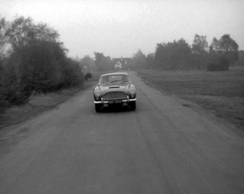
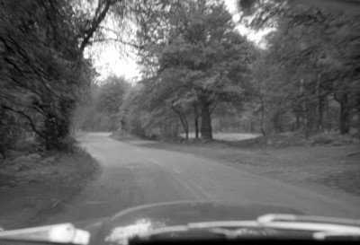
 Burnham
Beeches?
Burnham
Beeches?
Unknown 2 - During the hunt Bates (Martin Wyldeck) refuses to let Lord Yearley (Anthony Quayle) cross his land. He intends to hold the bridge by force, but yearly knocks him to the ground. Lady Anne Yearley (Sylvia Syms) turns up in a Landrover to talk sense to her husband.
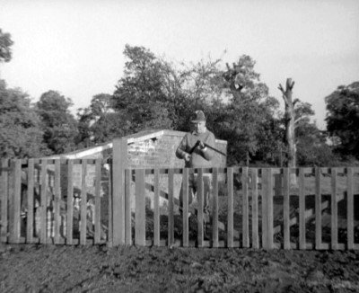
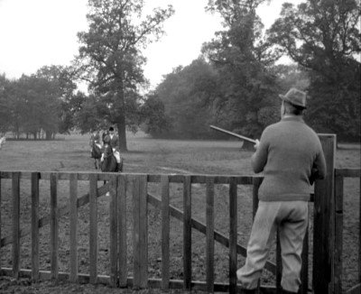
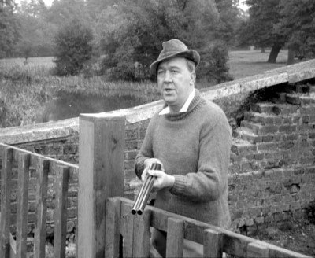
THE SAINT: Luella
(Roy Baker: 1963)
Club Panama Theatre,
Great Windmill Street, London W1 - Simon acts guide to a night on the town with Bill, including The Club Panama.
(Identified by Sietse Postma, January 2023)
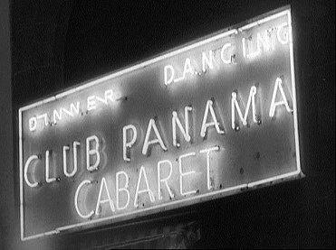
Unknown 1 - Simon acts guide to a night on the town with Bill, including La Cote d’Azur
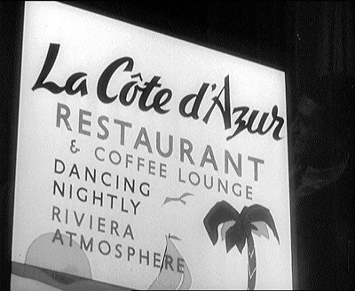
THE SAINT: The
High Fence (James Hill: December 1963)
Unknown 1
- Back projections as Simon
chases after Anworth and Fasson in his Volvo.

Unknown 2 - Robins (Richard Poore) goes to buy a cup of tea for Answorth form the café across the road from the police station but Quincy (Peter Jeffrey) is watching and follows him in.
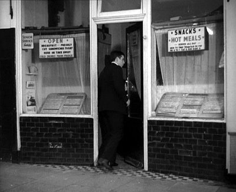
 Could
well be near Newcourt
Street, NW8.
Could
well be near Newcourt
Street, NW8.
Unknown 3 - Back Projection as Gilden Quincy forces Enderby to drive himself and Simon Templar to The High Fence.

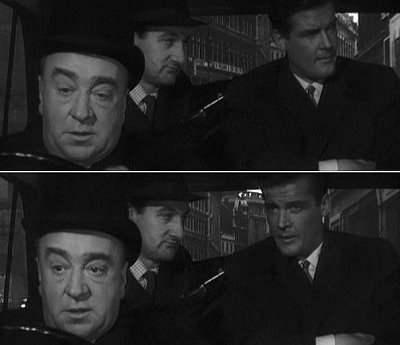

THE SAINT: The
Miracle Tea Party (Roger Moore: March 1964)
Unknown 1
- Volvo from station with
Geraldine McLeod aboard.
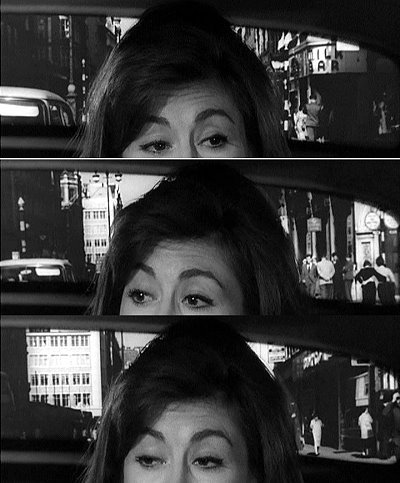
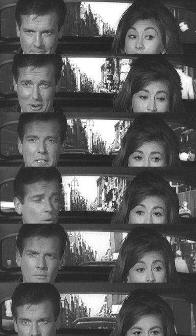
 Similar
street lights seen just before
Leicester
Square Underground station other
footage.
Similar
street lights seen just before
Leicester
Square Underground station other
footage.
Think you know a spot? Need a bigger image? Email me.
< Previous | Index | Avengerland | Next >
Copyright © 2003 Anthony R. McKay